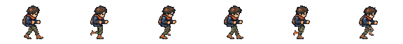

Source study. Artwork chân do GPT Image author; exporter đăng ký hip, palette, alpha và bake thành toàn thân. Đây chưa phải xác nhận hết trượt trong game.
Walk đã bị trả lại
East mới; thân trên giữ từ candidate
Bỏ “cùng nhịp” để xem timing author 53 ms/pha (318 ms/chu kỳ). Chu kỳ mục tiêu 28 units; ở tốc độ hiện có 88 units/s cần khoảng 318 ms. Candidate so sánh chỉ đổi artwork và giữ clock cũ 600 ms: dịch chuyển 52,8 units/chu kỳ. Dev phải nối clock theo displacement, kiểm sprint/stop/switch và contact drift.

| Pha | Chân R | Chân L | Đọc hình |
|---|
0 ↔ 3: chân trước đổi R → L. 2 ↔ 5: chân đi qua hông đổi L → R. Chân xa dùng cùng artwork theo offset ba pha và palette trầm hơn để đọc lớp. Hai chân chỉ tồn tại trong authoring; runtime nhận whole-body PNG.
Report renderer/authority sau thay artwork · Report trước · Candidate so sánh · Technical report.
Render tự động chưa phải playtest bằng bàn phím/chuột. North/South/West, diagonal, moving Reload/Melee/Hurt và nghiệm thu gameplay vẫn chưa thuộc bản East này.